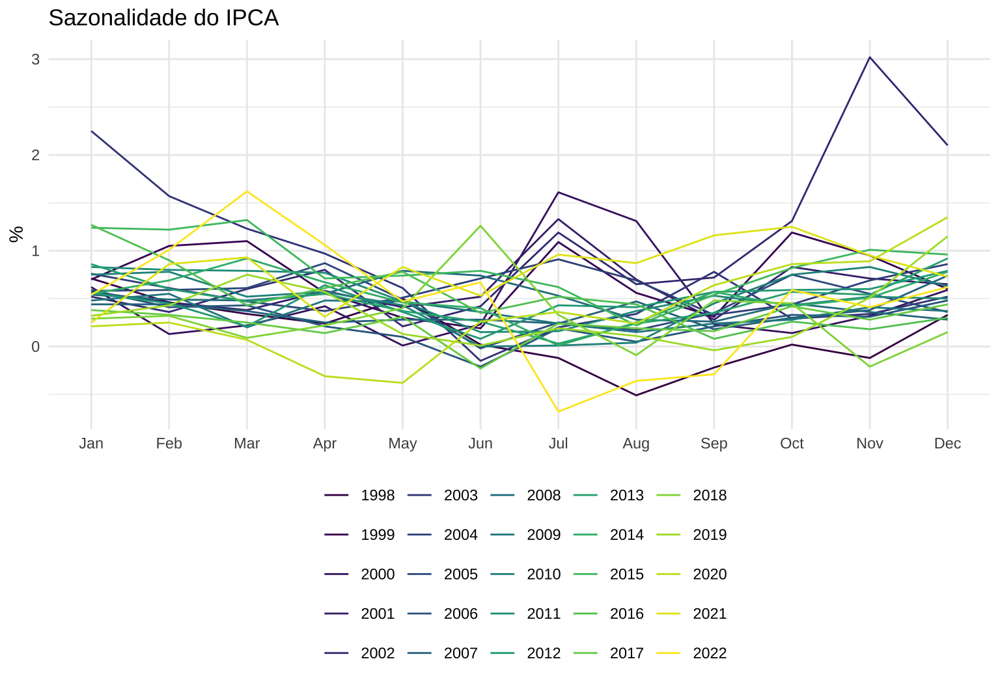
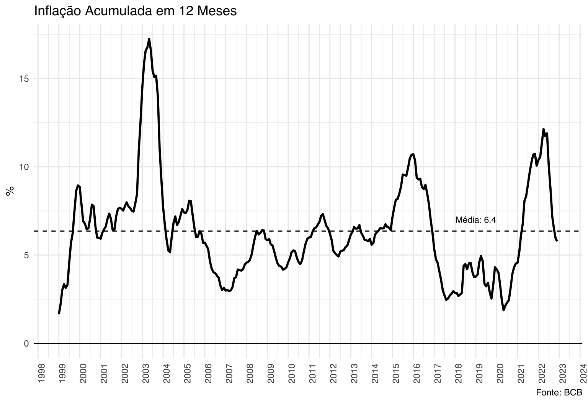
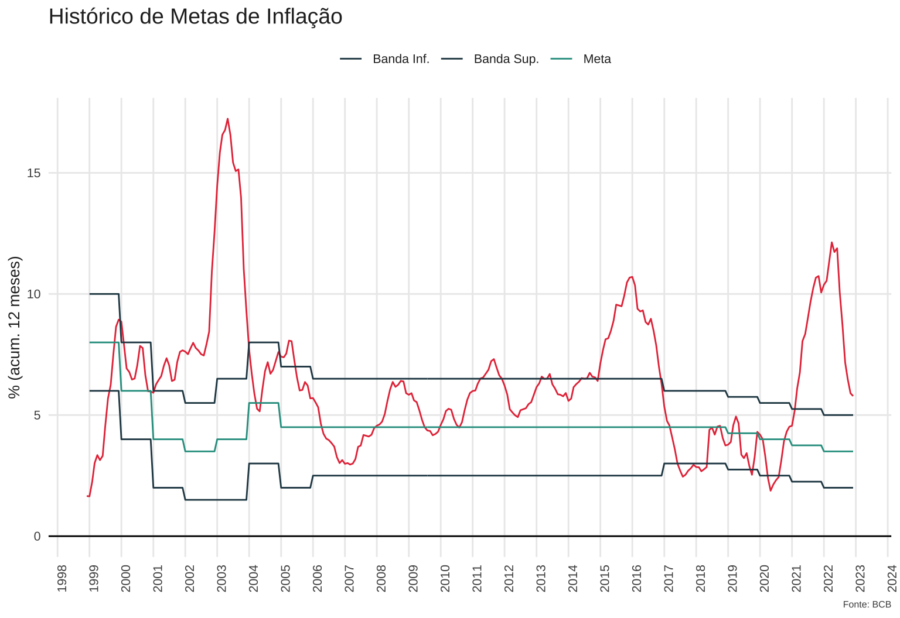
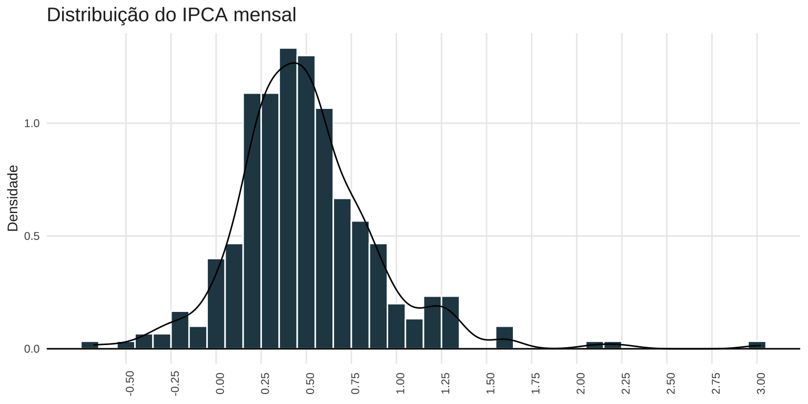
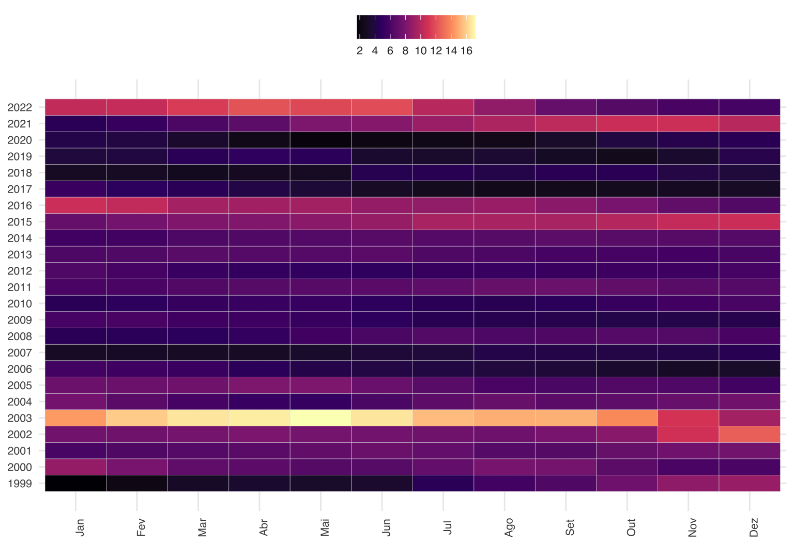
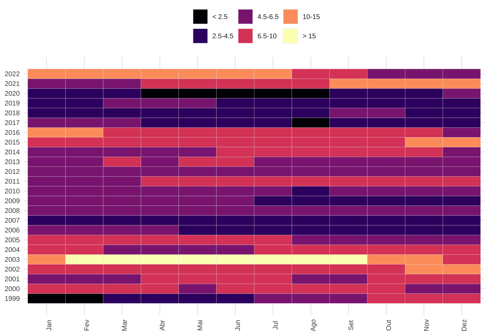
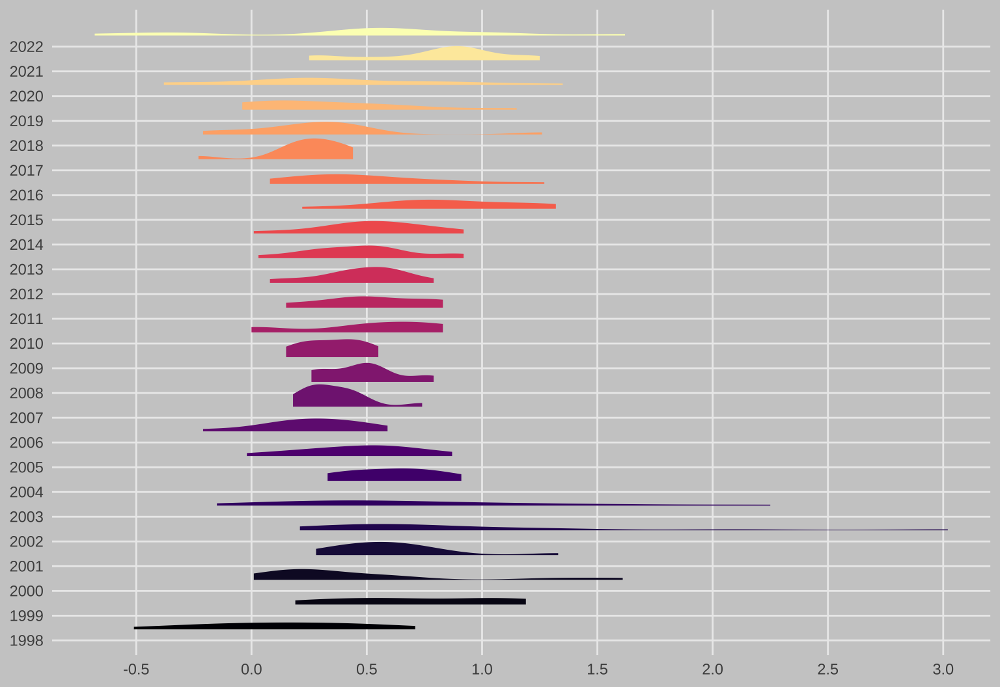
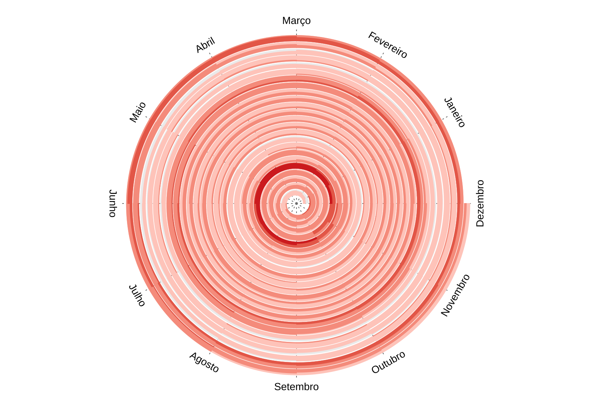

# Os pacotes utilizados
library(dplyr)
library(tidyr)
library(ggplot2)
library(ggdist)
library(spiralize)
library(showtext)
library(lubridate)
library(GetBCBData)
library(forecast)Inflação no Brasil
A inflação voltou a ser uma pauta, não só no Brasil, mas no mundo todo, nos últimos meses. No Brasil, a combinação de câmbio desvalorizado, desajustes logísticos, crise hídrica e choques de preços externos, culminaram no maior nível de inflação desde 2002.
Mesmo em países avançados, os níveis de inflação estão em altas históricas. Nos Estados Unidos, por exemplo, o nível do CPI está no valor mais alto desde o final dos anos 1970.
Visualizar a magnitude da inflação no Brasil pode ser um pouco desafiador. A série do IPCA é calculada desde 1979. O número de cidades avaliadas pelo índice cresceu no tempo: nos primeiros anos o índice contemplava Rio de Janeiro, Porto Alegre, Belo Horizonte, Recife, São Paulo, Brasília, Belém, Fortaleza, Salvador e Curitiba. Em 1991, Goiânia entra no índice e, mais recentemente, em 2014, Vitória e Campo Grande também entraram no cômputo do índice.
Mais importante do que a variação no número das cidades, é o período hiperinflacionário da década de 1980. Os números da inflação são incomparavelmente mais altos do que os atuais. Como regra, os cortes temporais mais relevantes para enxergar a inflação são Jul/94 (Plano Real), Jul/99 (Regime de Metas de Inflação), Mai/00 (Lei de Responsabilidade Fiscal) e Mai/03 (pós choque de 2002).
Neste post vou mostrar o comportamento da inflação desde 1999.
Pacotes
Importando os dados
Importo os dados diretamente da API do Banco Central usando o pacote GetBCBData.
# Importar os dados
ipca <- gbcbd_get_series(id = 433, first.date = as.Date("1998-01-01"))O código abaixo cria alguns elementos que serão necessários para as visualizações.
grid <- tibble(
ref.date = seq(as.Date("1998-01-01"),as.Date("2022-12-01"), "1 month"))
ipca_meta <- tibble(
year = 1999:2022,
meta = c(8, 6, 4, 3.5, 4, 5.5, rep(4.5, 14), 4.25, 4, 3.75, 3.5),
banda = c(rep(2, 4), rep(2.5, 3), rep(2, 11), rep(1.5, 6)),
banda_superior = meta + banda,
banda_inferior = meta - banda)ipca <- ipca %>%
inner_join(grid) %>%
fill() %>%
mutate(month = month(ref.date, label = TRUE, abbr = TRUE, locale = "pt_BR"),
year = year(ref.date),
value = value / 100,
acum12m = RcppRoll::roll_prodr(1 + value, n = 12) - 1,
acum12m = acum12m * 100) %>%
left_join(ipca_meta) %>%
mutate(deviation = acum12m - meta)Inflação
O cálculo do IPCA avalia a variação de preços de uma cesta fixa de bens. A composição desta cesta vem da Pesquisa de Orçamentos Familiares (POF), também feita pelo IBGE, que tem como objetivo representar a “cesta de consumo média” dos brasileiros.
Formalmente, o IPCA é um índice de Laspeyeres que compara o preço de mercado de uma cesta de bens \(W = (w_{1}, w_{2}, \dots, w_{n})\) no período \(t\) e compara o preço de mercado desta mesma cesta de bens no período anterior \(t-1\).
\[ I_{t} = \frac{\sum_{i}w_{i}P_{i, t}}{\sum_{i}w_{i}P_{i, t-1}} \]
Na prática, esta cesta de bens agrega um misto de gastos com habitação, alimentos, vestuário, combustíveis, serivços, etc. Como existe uma clara sazonalidade tanto na oferta como na demanda por estes bens, o IPCA também apresenta sazonalidade.
Isso fica claro, quando se visualiza a variação do IPCA mês a mês como no gráfico abaixo. Tipicamente, os meses de nov-dez-jan-fev apresentam valores mais altos do que os meses de mai-jun-jul-ago.
O ponto fora da curva em novembro é referente ao ano de 2002. Ele é resultado, em parte, da incerteza econômica e da enorme desvalorização cambial que se seguiu à primeira eleição do ex-presidente Lula.
y <- ts(ipca$value * 100, start = c(1998, 1), frequency = 12)
ggseasonplot(y) +
scale_color_viridis_d(name = "") +
labs(title = "Sazonalidade do IPCA",
x = NULL,
y = "%") +
theme_minimal() +
theme(legend.position = "bottom")
No longo prazo
Uma das maneiras de contornar o problema da sazonalidade é acumulando o índice anualmente, pois aí temos o efeito sazonal de todos os meses. O problema é que aí teríamos de sempre comparar anos completos, impossibilitando um diagnóstico da inflação em maio do ano corrente.
A solução é acumular o índice em doze meses, criando um “ano artificial”. A lógica é que, independentemente do momento do tempo em que estamos, contamos o efeito de todos os meses individualmente. Chamando de \(z_{t}\) o índice acumulado e \(y_{t}\) o valor do IPCA no período \(t\) temos que:
\[ z_{t} = [(1 + y_{t-12})(1 + y_{t-11})\dots(1 + y_{t-1})] - 1 \]
Assim, para o mês de maio de 2022 teríamos
\[ z_{\text{maio/22}} = [(1 + y_{\text{abril/22}})(1 + y_{\text{mar/22}})\dots(1 + y_{\text{jun/21}})] - 1 \]
Acumulado 12 meses
O código abaixo apresenta o histórico do IPCA acumulado em 12 meses junto com a sua média histórica.
Vemos como o período de 2002 é muito fora da curva. Também se nota como o Brasil quase sempre tem uma inflação relativamente alta, próxima de 5-6%. O único período de inflação baixa na série é no período 2017-19.
Vale notar que só faz sentido em falar na “média histórica” de uma série se ela for estacionária.
avgipca <- mean(ipca$acum12m, na.rm = TRUE)
label <- paste0("Média: ", round(avgipca, 1))
dftext <- tibble(x = as.Date("2019-01-01"), y = 7, label = label)
ggplot(na.omit(ipca), aes(x = ref.date, y = acum12m)) +
geom_line(size = 1) +
geom_hline(yintercept = 0) +
geom_hline(yintercept = avgipca,
linetype = 2) +
geom_text(data = dftext,
aes(x = as.Date("2019-01-01"), y = 7, label = label),
family = "Helvetica",
size = 3) +
scale_x_date(date_breaks = "1 year", date_labels = "%Y") +
labs(title = "Inflação Acumulada em 12 Meses",
x = NULL,
y = "%",
caption = "Fonte: BCB") +
theme_minimal() +
theme(
text = element_text(family = "Helvetica"),
axis.text.x = element_text(angle = 90))
A comparação com a média histórica é interessante, mas é mais relevante olhar para a meta de inflação. Desde 1999, o Conselho Monetário Nacional (CMN) define, em geral com 2 anos de antecedência, a meta de inflação que o Banco Central deve perseguir. Este tipo de estrutura institucional é bastante popular mundo afora e há uma sólida básica empírica e teórica que a sustenta.
Basicamente, ao estabelecer antecipadamente uma meta de inflação, o CMN tenta ancorar as expectativas das pessoas na economia. Se a meta for crível, as pessoas tendem a montar planos de negócios, firmar contratos e tomar escolhas tomando a inflação futura como a meta de inflação.
A meta de inflação também incentiva o Banco Central a priorizar o controle dos preços acima de outras prioridades concorrentes.
historico_meta <- ipca %>%
select(ref.date, acum12m, meta, banda_inferior, banda_superior) %>%
pivot_longer(cols = -ref.date) %>%
na.omit()
ggplot() +
geom_line(data = filter(historico_meta, name == "acum12m"),
aes(x = ref.date, y = value),
color = "#e63946") +
geom_line(data = filter(historico_meta, name != "acum12m"),
aes(x = ref.date, y = value, color = name)) +
geom_hline(yintercept = 0) +
scale_x_date(date_breaks = "1 year", date_labels = "%Y") +
scale_color_manual(name = "",
values = c("#264653", "#264653", "#2a9d8f"),
labels = c("Banda Inf.", "Banda Sup.", "Meta")) +
labs(title = "Histórico de Metas de Inflação",
y = "% (acum. 12 meses)",
x = NULL,
caption = "Fonte: BCB") +
theme_vini
No Brasil, o CMN define a meta e também a sua banda superior e inferior. No gráfico acima, vemos que a inflação esteve relativamente dentro da meta no período 2003-2014, ainda que depois de 2008 o índice tenha ficado sempre acima do centro da meta.
Após a alta de 2016 o índice cai para níveis bastante baixos e o CMN inclusive começa a progressivamente reduzir a meta de inflação. Este é o único período desde 1999 em que a inflação fica, em alguns momentos, abaixo da meta.
Evidentemente, a inflação dispara no período recente. O enorme descolamento com a meta põe o sistema em cheque, à medida em que as pessoas acreditam cada vez menos na habilidade do Banco Central em honrar seu compromisso.
Enxergando a distribuição
Outra maneira de enxergar o IPCA é olhar para a distribuição dos seus valores. O gráfico abaixo é um histograma com uma linha de densidade sobreposta.
Note como o os variações mensais do IPCA estão concentradas entre 0,25 e 0,5 e como os “outliers” à direita são mais comuns do que os “outliers” à esquerda. Isto é, eventos de alta inflação são mais frequentes do que de desinflação.
Conhecer a distribução dos dados costuma ser uma informação relevante para a previsão da variável.
ggplot(ipca, aes(x = value * 100)) +
geom_histogram(aes(y = ..density..), bins = 38,
fill = "#264653",
color = "white") +
geom_hline(yintercept = 0) +
geom_density() +
scale_x_continuous(breaks = seq(-0.5, 3, 0.25)) +
labs(title = "Distribuição do IPCA mensal", x = NULL, y = "Densidade") +
theme_vini
Um tipo de visualização interessante é montar um “grid” como o abaixo. Um problema é que a escala de cores acaba um pouco deturpada por causa do período 2002-3.
ggplot(filter(ipca, ref.date >= as.Date("1999-01-01")),
aes(x = month, y = year, fill = acum12m)) +
geom_tile(color = "gray90") +
scale_y_continuous(breaks = 1999:2022) +
scale_fill_viridis_c(name = "", option = "magma", breaks = seq(0, 16, 2)) +
labs(x = NULL, y = NULL) +
theme_vini
Algum nível de arbitrariedade é necessário para resolver isso. Uma opção é agrupar os dados em grupos. Como a meta mais longa que tivemos foi a de 4.5 com intervalo de 2, monto os grupos baseado nisso. A aceleração recente da inflação, a meu ver, fica mais evidente desta forma. Inclusive, conseguimos enxergar melhor como a inflação recente é mais intensa do que a de 2015-17.
grupos <- ipca %>%
filter(ref.date >= as.Date("1999-01-01")) %>%
mutate(ipca_group = findInterval(acum12m, c(0, 2.5, 4.5, 6.5, 10, 15)),
ipca_group = factor(ipca_group))
labels <- c("< 2.5", "2.5-4.5", "4.5-6.5", "6.5-10", "10-15", "> 15")
ggplot(grupos,
aes(x = month, y = year, fill = ipca_group)) +
geom_tile(color = "gray90") +
scale_y_continuous(breaks = 1999:2022) +
scale_fill_viridis_d(name = "", option = "magma", labels = labels) +
labs(x = NULL, y = NULL) +
theme_vini
Também podemos plotar a distribuição dos dados a cada ano. Note que a visualização abaixo não é nada convencional do ponto de vista estatístico.
Ainda assim, é interessante ver a dispersão enorme dos valores em 2002-3 e também como a inflação ficou relativamente bem-comportada nos anos seguintes até se tornar mais volátil e enviesada para a direita em 2016.
ggplot(ipca, aes(x = factor(year), y = value * 100, fill = factor(year))) +
stat_halfeye(
justification = -.5,
.width = 0,
point_colour = NA) +
scale_fill_viridis_d(option = "magma") +
scale_y_continuous(breaks = seq(-0.5, 3, 0.5)) +
guides(fill = "none") +
coord_flip() +
theme_minimal() +
labs(x = NULL, y = NULL) +
theme(plot.background = element_rect(fill = "gray80", color = NA),
panel.grid.minor = element_blank())
Por fim, uma visualização que eu acho muito interessante, mas que é ainda menos convencional é de espiral. Eu sinceramente não sei se é possível enxergar muita coisa de interessante desta forma e eu, infelizmente, não entendo o pacote spiralize o suficiente para entender de que forma é possível ajustar a escala das cores.
Fica uma visualização bacana, mas não acho que seja a mais apropriada.
ipca <- na.omit(ipca)
spiral_initialize_by_time(xlim = range(ipca$ref.date),
unit_on_axis = "months",
period = "year",
period_per_loop = 1,
padding = unit(2, "cm"))
#vp_param = list(x = unit(0, "npc"), just = "left"))
spiral_track(height = 0.8)
lt = spiral_horizon(ipca$ref.date, ipca$acum12m, use_bar = TRUE)
s = current_spiral()
d = seq(30, 360, by = 30) %% 360
month_name <- as.character(lubridate::month(1:12, label = TRUE, abbr = FALSE, locale = "pt_BR"))
for(i in seq_along(d)) {
foo = polar_to_cartesian(d[i]/180*pi, (s$max_radius + 1)*1.05)
grid.text(month_name[i], x = foo[1, 1], y = foo[1, 2], default.unit = "native",
rot = ifelse(d[i] > 0 & d[i] < 180, d[i] - 90, d[i] + 90), gp = gpar(fontsize = 10))
}